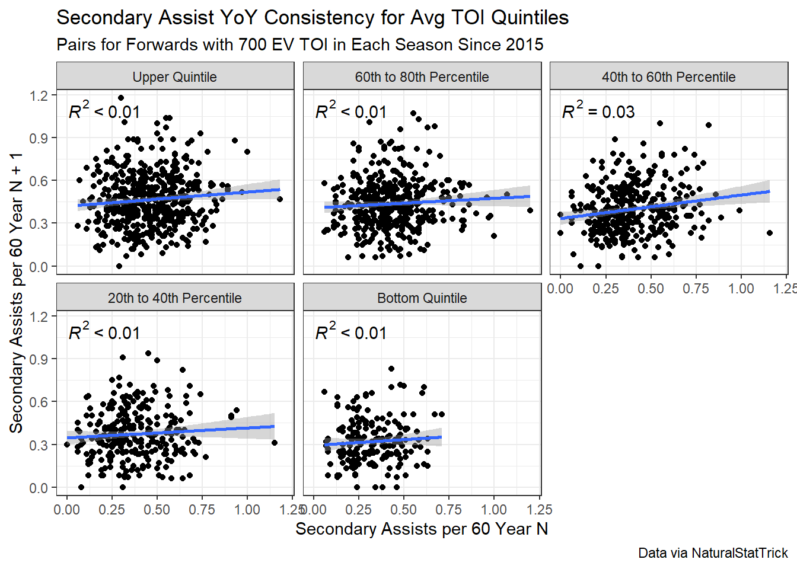
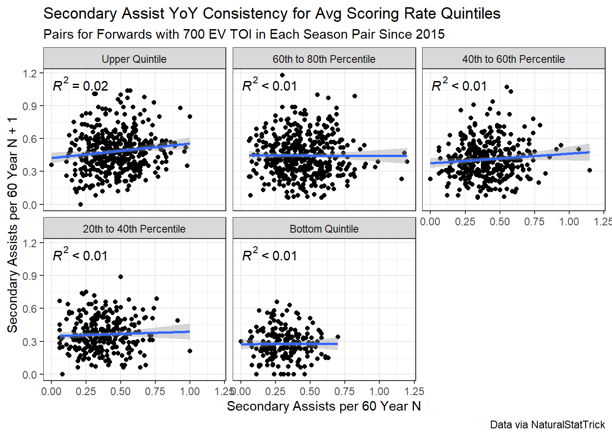
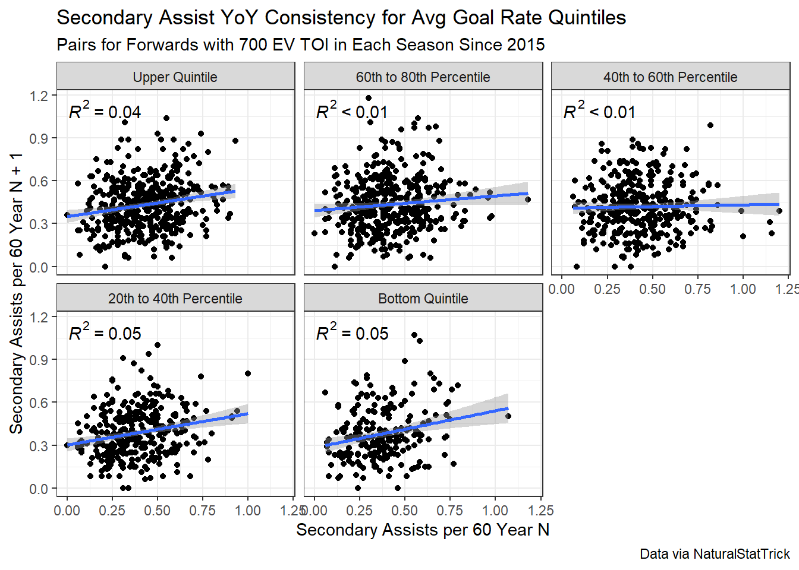
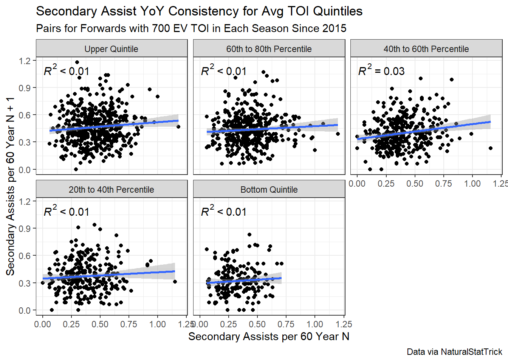
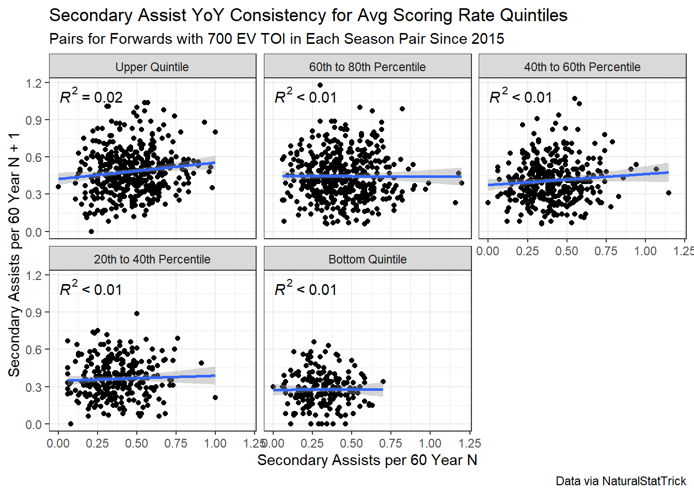
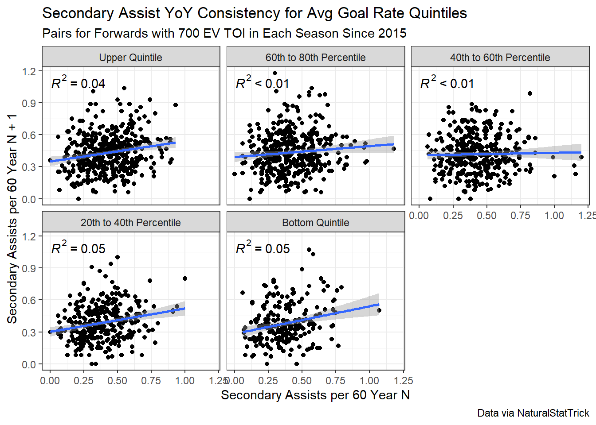

Carmen Ciardiello
March 11, 2024
A recent question from the Hockey PDOCast Discord (link is in the show notes if you want jump in) about the usefulness of secondary assists across the overall population of NHL players sparked some debate. The merits of leveraging secondary assists in player analysis (at least relative to goals or primary assists; I am here for the argument that citing points as one of the more paramount measures in player analysis is not the most practical) is a well trodden topic of research at this point in time. For the uninitiated, secondary assist rates are less consistent year over year compared to both goal scoring and primary assist rates. If you do some digging, you can find analysis to this effect but to save readers the time I will link to one of these posts from Chace McCallum.
No need to elaborate any further. I would suggest to those who disagree with this premise to pursue some research on their own and report back with their findings. The real impetus for this post was a point one Discord user made about whether generalizing the usefulness of secondary assists across the entire player population is sensible. The user wondered whether secondary assists were a better measure of skill for the upper crust of the player pool because they are naturally more involved in their team’s offense and are more likely to complete high-end passing plays that do not directly result in subsequent shot and goal. I was skeptical of this claim. My rationale was the main sources of instability in secondary assists year over year still persisted no matter the quality of the player. Those sources are the lack of consistency in recording secondary assists and the degree to which the player is removed from the goal that is ultimately scored.
Let me tackle the first item since it is a bit more straightforward. There are not any hard and fast rules for doling out assists as long as there is no change of possession between when the passer makes the pass and the goal scorers puts the puck in the back of the net. An assist is up to the scorekeeper’s discretion. That means that assists are subject to the variability and biases between and of scorekeepers. Primary assists are still subject to these issues, but I would argue there are more cases where it is exceedingly obvious to anyone watching a game that a primary assist occurred because the eventual goal comes within seconds of the pass occurring. This is not as clear with most secondary assists. Thus, if secondary assists are at the whims of scorekeeper biases more so than either goals or primary assists, you should expect more variability in player rates year over year (because the player has no control over these biases/variability).
The aforementioned second item (the degree to which the player is removed) is more conceptual. Throw out the idea of scorekeeper biases for a minute and assume that the definition of a secondary assist (and primary assist for that matter) is both set and clear. Now consider a goal that is scored that has both a primary assist and a secondary assist. For a player to pick up a secondary assist, five things had to occur:
I will note that goals and assists can be the result of deflections, but the general contours of the above scenario would still apply. For a player to receive a secondary assist on a goal, there is more out of his control relative to both the player receiving the primary assist and the player scoring the goal because he is further removed from the sequence defining action (the goal scored). The player with the secondary assist cannot control whether his teammate cleanly receives his pass, gets off a pass to another teammate, who then successfully puts the puck on goal and past the goaltender. There are more degrees of freedom in a system where secondary assists are considered, so more sources of variance. Therefore we should expect secondary assists to lag behind goals and primary assists in terms of year over year consistency because a lower proportion of the degrees of freedom in this goal-scoring system are directly the result of the actions of the player who receives the secondary assist.
Now let’s get back to the premise of this post. These two issues outlined above apply to all players, no matter the skill level. Sure, a more skilled player is likely a better passer which leads to it being easier to receive that player’s passes. But by and large there is still a ton out of a high-skill player’s hands just as there is for his teammates playing at the bottom of the lineup. Nevertheless, the original question posed by the Discord member is both thought-provoking and demands a test. I sought to test the hypothesis by binning players into five groups (quintiles) based on several measures and check to see whether there is a similar degree of repeatability year over year in each bucket. I limited my analysis to forwards who played at least 700 even strength minutes in both seasons in a given seasonal pair since the 2015 season.
I chose average time one ice per game, scoring rate, and goal scoring rate over the entire 10 year period as the statistics with which to bucket the players. All of the data was pulled from Natural Stattrick. The reasons for using point scoring and goal scoring rates is that they are the manifestation of offensive skill (to some degree, as I allude to in the first paragraph). Turning to time on ice is less obvious. My rationale was that coaches (theoretically) allocate ice time based on merit, in that they put the players out on the ice most often who they believe most positively contribute to their teams pursuit of outscoring the opposition. The degree to which ice time is correctly allocated based on this principle is obviously up to debate for some coaches more than others (see Ehlers, Nikolaj). But on the whole, I think it is safe to say that generally good players receive more ice time than less good players.
A more enlightened reader might ask: “Hey Carmen, you even admitted that using scoring rates as a primary means of evaluating players is fraught with issues and we have better ways to measure player ability like publicly available WAR metrics or penalized regression-based RAPM rates. Why don’t you use those?” To that enlightened reader, I tip my cap to you and admit that binning based on my chosen metrics is likely not the best way to group players (if the goal is to best do so by ability). A more rigorous analysis would consist of me using my RAPM estimates or pulling WAR accumulation/rates from Evolving-Hockey. But I am lazy and Natural Stattrick has brilliantly laid out and easy to use tables for all of us to enjoy. So I saved myself time and pulled what I thought were the most applicable measures from there, with an understanding that there was some limitations to my methodology. I would assert that using what is ostensibly a better and more holistic stat would not likely change the conclusions drawn from my analysis. But I encourage those skeptical to give it a whirl themselves.
OK, now some results. Across all three methods for separating players, there is no discernible difference between the reliability year over year of secondary assist rates for forwards.



No matter how you slice it, there is not much there. Player skill level does not seem to have a bearing in how prolifically a player is going to continue to accumulate secondary assists from one year to the next. The issues inherent in the attribution and accumulation of secondary assists I outlined in great detail are not immune to more productive players. They are inherent to how secondary assists are tracked by scorekeepers and earned by players. My initial skepticism of the claim was warranted, but that is not to say this was not a worthwhile endeavor. The original objection with the idea that secondary assists are not the same for players at either end of the lineup was one I had not heard of until this past weekend, nor one that I believe had been investigated. So, despite no interesting results, I think we all learned something new.